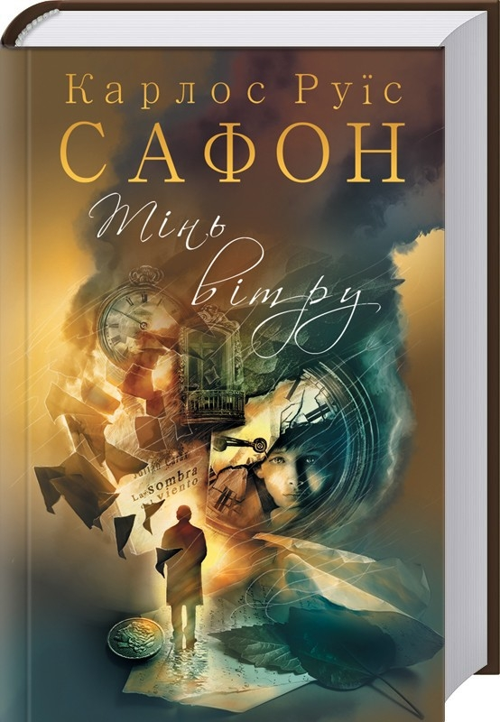
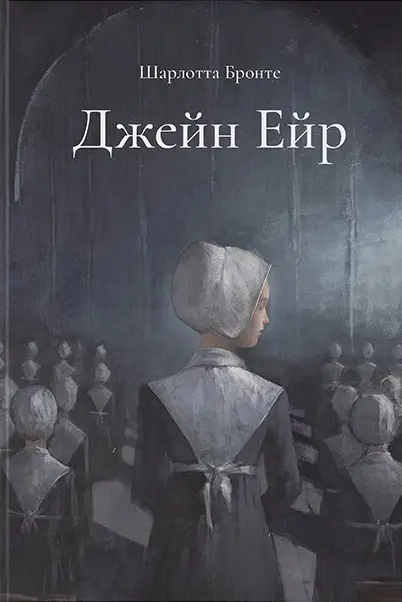

Сьогодні читаємо
- Починається сезон дощів, а вечори темні та холодні — саме те що потрібно, аби сховатись у кімнаті з чашкою чаю та атмосферною книгою. Чому атмосферною? Тому що важливо не тільки те, хороша книга чи погана, а й те, чи вчасно вона потрапила до ваших рук. Засмучена людина не буде в захваті він якісної комедії, а радісна — не відчує настроїв головних героїв у драмі. Навіть якісній літературі потрібен свій час. Тож ми зробили для вас добірку саме таких атмосферних книг, які ідеально пасуватимуть до осінньої пори:
-
-
1. О. Генрі «Останній листок»
Не можна розпочинати осінні читання, не згадавши про цю розповідь. Вона коротенька — на один вечір, але залишає після смак ще надовго. І навіть якщо ви читали розповідь десятки разів та на пам’ять знаєте, чим вона закінчиться — все рівно слід її перечитати. Аби нагадати собі про те, наскільки дивовижне наше життя, коли у ньому є місце для дружби, самопожертви та глибоких почуттів.
-
2. Рей Бредбері «Напередодні Дня всіх святих»/«Дерево Геловіну»
Здається, що історій Бредбері вистачає на кожну пору року і яка погода не була б за вікном — завжди знайдеться доречна книжка цього автора. Ця — ідеально пасує до осіннього настрою із присмаком магії. Її варто прочитати тим, хто й у дорослому житті знаходить місце для чарівних історій, мрій про потойбічні світи і жаги до розгадування таємниць. Рекомендується розповідь до прочитання напередодні Дня всіх святих — Хелоуїна.
-
3. Фенні Флеґґ «Смажені зелені помідори в кафе «Зупинка»
Багато людей бачили однойменний фільм, але мало хто знає, що він був знятим по чудовій книзі, вартій, аби її прочитали. Головні героїні обговорюють дивовижні історії життя людей, що їх оточують чи оточували. І ні, це не просто плітки двох жіночок у кафе. Це історії, котрі змушують інколи сумувати, інколи захоплюватись чи сміятись. Але всі вони — надихають і додають сили, так що цю книгу можна приймати як ліки від осінньої апатії.
-
4. Руїс Сафон «Тінь вітру»

Середньовічний готичний роман можна вважати просто уособленням цієї пори року. Тим більше, якщо він написаний автором, котрого порівнюють із королем даного жанру — Умберто Еко.
Знайомимось ми з головним героєм, ще коли він зовсім маленьким хлопчиком знаходить магічну книгу, що змінює раз і назавжди його подальше життя. І ми із захопленням слідкуємо за його пригодами, відносинами з людьми, незвичними поворотами долі та магічними епізодами, яких так часто не вистачає у реальному житті.
-
5. Скарлетт Томас «Наш трагічний Всесвіт»
Англійські письменники — майстри в питанні атмосферної осінньої прози. І не дивно, адже їх країна здається місцем, де осінь панує увесь рік: дощі та густі тумани, холодне море і вітер, теплі светри та пальто, чай з молоком і старі будинки покриті мохом.
Головна героїня роману — письменниця, яка одно разу знаходить книжку, що змінює її життя. Все навколо неї кардинально змінюється, окрім одного — англійської осені.
-
6. Діана Сеттерфілд «Тринадцята казка»
Що може ідеально доповнити осінь? Правильно — готичний роман! Спочатку здається, що у вас попереду цілий вечір і його нема чим зайняти. Аж раптом на годиннику третя ночі, а в не можете відірватись він книжки, поки не дізнаєтесь, скільки ж насправді було спочатку дівчат і що з ними насправді сталось.
-
7. Шарлотта Бронте «Джейн Ейр»

Її без зайвих сумнівів відносять до визнаної класики і більшість книголюбів вже давно прочитали цю книжку. Але ж є такі історії, до яких хочеться повертатись щороку. Аби роман отримав відлуння у вашому серці — читати його потрібно саме у осінню пору.
-
8. Кеннет Грем «Вітер у вербах»
Класична англійська казка — саме те, що потрібно, якщо ви читаєте у вечері разом із дітьми. Для дорослих така мила історія не буде нудною, а дітям вона стане улюбленою книгою на довгі роки, адже в ній є все те, що ми так любимо у дитинстві. Якщо ваша мета — розвивати у дітей правильний смак до літератури, то ця казка неодмінно має бути у списку до прочитання.
-
9. Ернест Гемінґвей «Свято, яке завжди з тобою»
Ідеальна книга, щоб відчути атмосферу Парижа, яким він був на початку XX століття. Це книга спогадів самого Гемінґвея про тодішнє життя, перші проби пера та життя з дружиною Хедлі. З книги можна дізнатися не лише про автора та місто, а й побачити портрети інших популярних письменників: Алістера Кроулі, Френсіса Скотта Фіцджеральда, Гертруди Стайн. Сама книга з’явилася із записок письменника в блокноті й видана була вже після його смерті.
-